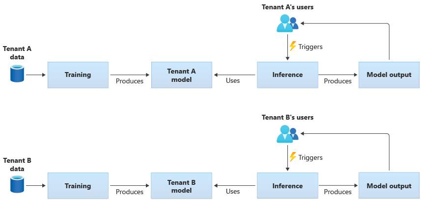
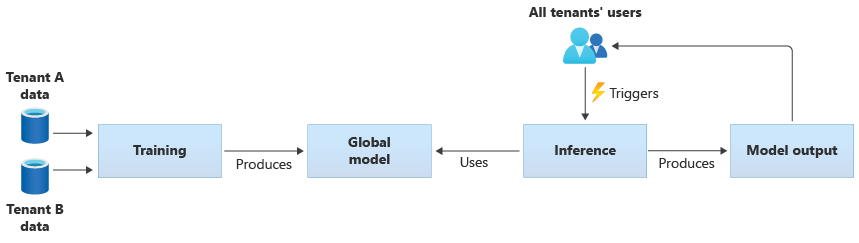
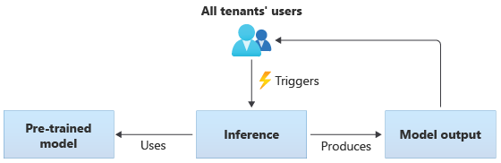
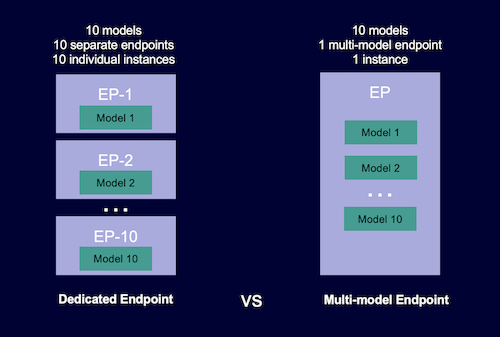
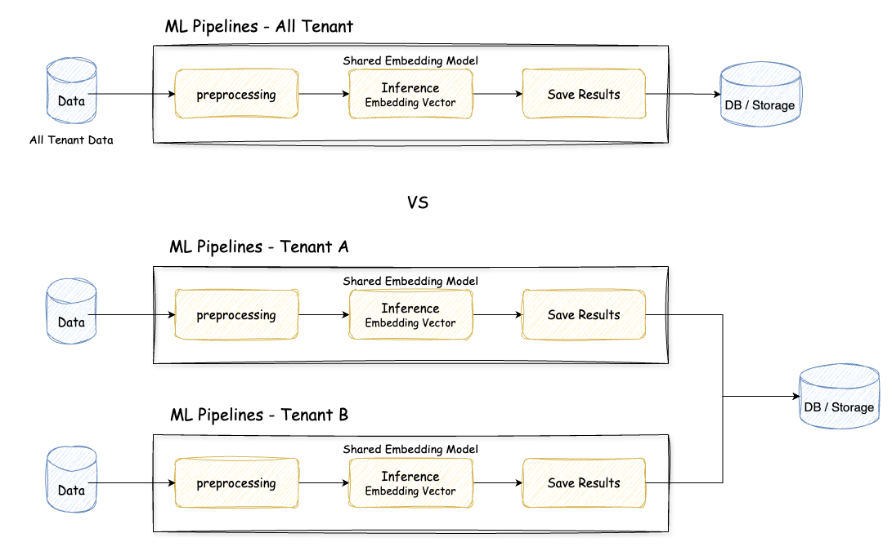
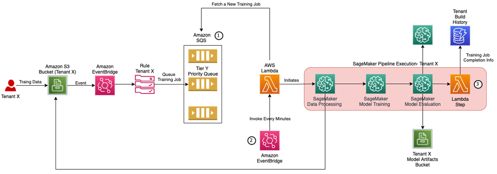

はじめに
もう今年もあと数えるほどで終わってしまいますね😅（去年も同じこと書いている笑）
遅くなりましたが，この記事は MLOps Advent Calendar 2024 の24日目の記事になります！
去年は「機械学習パイプラインの作り方を改めて考えてみる」というポストをしましたが，今年は「マルチテナント環境における機械学習適用」について考えていることや悩みを紹介したいと思います．
この内容を書こうと思ったモチベーションについて最初に説明すると，昨今 SaaS でのプロダクトやサービス提供が増えていて，ソフトウェアなどを複数のクライアント企業で共有するモデルであるマルチテナント方式が取られていますが，プロダクトの機能として機械学習（ML）サービスをこのようなマルチテナント環境で提供する際の考え方や悩みどころに関する記事はあまり世の中で見かけない気がします．（以前からこのような方式で機械学習を提供している会社はたくさんありそうに思うのですが…）そこで，参考になる記事が1つでもあればと思い，このブログを書くことにしました．
本ブログの構成としては，最初にマルチテナント環境での機械学習の話題が触れられている AWS の記事「Implementing a Multi-Tenant MLaaS Build Environment with Amazon SageMaker Pipelines」と Azure の記事「Architectural approaches for AI and ML in multitenant solutions」を参考にマルチテナント環境での ML の考慮事項について紹介します．後半では，僕が経験してきた SaaS 提供での ML サービスの話題なども例として紹介したいと思います．
マルチテナント環境での ML 適用のための考慮事項
ML 適用を考える際には，モデルの学習と推論という2つの大きなフェーズがあります．これらのフェーズには，モデルとデータ，そしてそれらを支えるインフラシステムが密接に関連しています．
マルチテナント（複数の顧客が同一のシステムを共有する）環境ではテナントの分離が重要な関心事になります．AWS のアーキテクチャガイドラインでは，これを Silo（完全分離）・Pool（共有）・Bridge（ハイブリッド）の3つのモデルとして紹介（Silo, Pool, and Bridge Models）しています．
ML の文脈では，データとモデルのセキュリティが特に重要です．具体的には，テナントが他のテナントのデータやモデルへ未承認または不正にアクセスできないようにする必要があります．例えば，投稿監視システムでは，テナント固有の監視ルールがある一方で，暴力的な投稿の検出など，すべてのテナントに共通する要件も存在します．このような共通要件に対しては，すべてのテナントのデータを統合して学習することで，より大規模なデータセットを活用でき，効果的なモデルを構築できる可能性があります．ただ，このようなデータ統合については，セキュリティ上問題ないか，契約的に大丈夫かといった制約を確認する必要があります．
テナントの分離パターン
ここで話をテナントの分離に戻すと，マルチテナント環境における ML モデル・パイプラインの実装方式として，データとモデルの観点から主に以下の2つのアプローチがあります．
-
テナント専用のモデル
- 各テナントに専用リソースが提供されるモデルで，テナント固有のデータのみで学習を行い，テナントごとに独立したモデルが作成される
- ML パイプラインの定義は複数のテナントで共有されることも多い
- 参考：AWS の MLaaS（Machine Learning as a Service）実装ガイドラインではテナント専用 ML モデルの具体的な構築例が載せられている
テナント専用のモデルのパイプラインイメージは Azure の記事にある図が分かりやすいと思うので，載せておきます． 
-
テナント共有のモデル
- 複数のテナントでリソースを共有しているモデルで，すべてのテナントのデータを用いて学習が行われ，単一の共有モデルが作成される
- テナント共有のモデルの例としては，事前学習済みの共通モデルを全テナントで利用するケースがある
こちらもテナント共有のモデルのパイプラインイメージは Azure の記事にある図が分かりやすいと思うので，載せておきます．  
さらに，これらのハイブリッドアプローチとして，共有の事前学習済みモデルをベースにテナント固有のデータでファインチューニングを行う方式があります．この方式は，一般的な特徴を共有モデルで捉えつつ，テナント固有の要件に対応できる利点があります．
スケーラビリティは要注意
スケーラビリティは特に大事な要素だと感じます．サービスが拡大していくとテナントの数が増えていき，それに伴いテナントが保有するデータ量（ユーザー数，ログデータ）も増えていきます．
-
テナント専用のモデル
必要なモデル数はテナント数に比例します．使用するデータについてはテナント毎でデータ量の差はあるものの，基本的には増加の一途を辿ることになるので，モデル学習時にどれだけのデータを使用するかの調整と，コンピューティングリソースの適切な割り当て（CPU, メモリ）が必要になります．これはコストにも関わってきます．また，テナント数に比例したモデル数になるので，マネージドサービスを使う場合は Quotas and limits が存在するため，システム設計をきちんと行う必要があります．
-
テナント共有のモデル
すべてのテナントデータを用いて学習を行うため，学習用のリソースがテナント数の増加と同じ速度でスケーリングされる可能性が低くなりますが，その分データ量が専用モデルと比較して多くなり，モデルの学習時間も長くなる傾向にあります．これは学習頻度にも影響してきます．
次に推論についても考えてみると，テナント専用のモデルを用意する場合が特に厄介です．方針は大きく2つあると思います．
- テナント毎に独立したサービングコンテナを用意する（単一モデルエンドポイント）
- Pros:
- テナント毎のカスタマイズが容易で，リソースもテナント毎に適した配分をすることが可能になる
- Cons:
- テナント毎にサービングコンテナを用意する必要があるため，インフラコストが増加しがちで，デプロイメント作業やシステムの管理が複雑になる
- Pros:
- 複数のテナントモデルをホストできる共有サービングコンテナを用意する（マルチモデルエンドポイント）
- Pros:
- インフラコストは効率的になる．アクセス頻度の高いモデルと低いモデルが混在している場合は，トラフィックが効率的に処理可能になる
- Cons:
- テナント間の分離レベルが低下するため，障害が発生した場合に影響範囲が全体に波及する．また Noisy Neighbors（うるさい隣人）に注意が必要で，リソースをテナント間で共有している場合は，1つの大きなテナントによりリソースを過度に占有され，システム全体のパフォーマンスが低下する可能性がある
- Pros:
AWS の Multi-model endpoints というドキュメントから下図をお借りしました．マルチエンドポイントと単一モデルエンドポイント（Dedicated Endpoint）の違いがわかりやすいと思います．

どちらを選択しても一長一短あるので，自分たちのユースケースに応じた選択になると思います．マネージドサービスを利用している場合は，オートスケールする設定にすることが多いと思いますが，気づいたら複数インスタンスが立ち上がってコストが爆発するケースもあるので，推論システムを用意する場合は慎重に進める必要があると感じています．
推論システムの話は，「事例でわかる MLOps - 6.3.5 推論システム -デプロイと推論システム-」の章で解説されているので，参考になると思います！
その他の要素
他には，パフォーマンスや実装の複雑さ，コストの話など考えることが多くあります．またマルチテナントでは公平性についても議論されていて，Fairness in multi-tenant systems という AWS のアーキテクチャガイドラインが記された記事もあります．
SaaS プロダクトでの ML サービスを考えてみる
題材として推薦システムを取り上げ、以下の2つのユースケースについて検討してみます：
- コンテンツ間の関連性に基づくレコメンド
- ユーザーに応じたコンテンツのレコメンド（パーソナライズレコメンド）
1. 共有モデルを用いた関連コンテンツの推薦システム
関連コンテンツをどのような方法で実現するかは様々なアプローチがありますが，今回は一例としてコンテンツのタイトルや本文のテキスト情報の類似性を使った推薦を考えます．テキストの類似性を見るのであれば，学習済みの埋め込みモデルを用いて埋め込みベクトルを計算し，コサイン類似度で関連性の定量化を行うことができます．この場合は，テナント共有のモデルの章で紹介した共通の学習済みモデルから推論を行うパターンが考えられそうです．
提供する形態は，バッチ推薦として1日1回コンテンツに紐づいた推薦リストを用意してテナント毎にレコメンドを行います．
前処理や埋め込みベクトルの計算，レコメンド結果の保存といった一連の処理を毎日行う必要があるため，学習パイプラインを用意して処理をコンポーネント単位に分割して実行できると良さそうです．これをテナント毎にパイプラインを用意するか，それとも1つのパイプラインですべてのテナントのデータを処理するか悩ましいです．
悩ましい点としては，エラーハンドリングやリトライ処理の設計があります．エラーが発生した場合にどの時点から処理を再実行すべきなのか，すべての処理が完了しないとすべてのテナントに展開できないのかなど考えておくべきことがあります．
また，データ量にも注意が必要になります．テナントによってコンテンツ量が違うため，あるテナントでは数千件，別のテナントでは数万件など考えられます．1つのパイプラインで全てを処理しようとしたら，推論時間も気にしないといけないです．

- 1つのパイプラインですべてのテナントのデータを処理
- 特定のテナントの処理でエラーが発生した際に，後続のテナントの処理に影響が出る
- リトライ処理をどの位置から実行するか，それを容易に可能とする仕組みが必要になる
- データ量がテナント毎で異なるため，マシンスペックなど適切なリソース設定が難しくテナント毎のコスト計算がしづらい
- テナント毎のパイプラインでデータを処理
- スケールする仕組みを用意しないと容易に破綻する．例えば，パイプラインを起動するスケジューラーをテナント毎に用意して起動させると考えた場合，テナント数だけ管理が必要で現実的ではない．またマネージドサービスを利用する場合は Quotas and limits が存在する
このため，モデルの定義やパイプラインの構成などは同一でもパイプライン自体をテナント毎に用意する選択肢が考えられます．これはテナントのデータ量に応じて適切なリソースを割り当てることができたり，エラーによる影響を最小限に留めるといったメリットがあります．
テナント毎のパイプラインでデータ処理を行うスケールするアーキテクチャ図が，AWS の記事で紹介されていて参考になりそうです（下図）．

このアーキテクチャでは，同時実行数を制御するために，Amazon SQS を活用して，Lambda によって実行状況を確認しながら，Amazon SageMaker Pipelines を起動する役割を担っています．
AWS ではなく，Google Cloud の Vertex AI Pipelines を活用する場合は，同時実行数の上限は300ですが，上限を超えた場合は自動的にキューに入れてくれる設計になっています（参考：Vertex AI quotas and limits - Vertex AI Pipelines）．そのため，Cloud Scheduler と Cloud Functions を用いて起動するタイミングを制御すれば良さそうです．
共有モデルを用いた場合は，モデルに関しては1つに定まるためそこに関しては考える要素が減ってきます．では，テナント専用のモデルを用いる場合はどうでしょうか？
2. 専用モデルを用いたパーソナライズ推薦システム
専用モデルといった場合，データは1つのテナントのみを使用し，モデルアーキテクチャはすべてのテナント共通であるケースと，モデルアーキテクチャもテナント毎で異なるケースが考えられます．
機械学習を用いた推薦アルゴリズム特にディープラーニングを活用した場合は，精度にデータ量の問題が関わってきます．データ量が少ないと期待した精度が出ないため，テナントの属性データをクラスタリングしクラスター（大小の規模）に応じてより適切なアルゴリズムを選択したくなります．
- テナント毎のデータ量
- 多い場合：ディープラーニングによる複雑ではあるが効果的な手法
- 少ない場合：協調フィルタリングなどのオーソドックスな手法
このようなケースでは，設定ファイルやパラメータを渡せるようにしたり，テナント毎にメタデータを付与して動的にアルゴリズムを切り替えて管理する仕組みが必要とされるかもしれません．専用モデルを用意するということは共通モデルと比べてモデルに関する要素が加わるため，より一層複雑性が増します．
専用モデルをオンライン推論したい場合は，「スケーラビリティは要注意」の章でも触れましたが，とにかく難易度が上がるので，可能ならなるべく避けたいところです．
おわりに
マルチテナント環境での ML 適用を考えた場合の懸案事項について，主にデータとモデルの観点から考えてみました．テナント専用モデルと共有モデルそれぞれのアプローチには一長一短があり，サービスの要件や運用条件に応じて適切な選択が必要だと思います．
スケーラビリティだけなく，今回はあまり触れていないですが，セキュリティ・コストも重要な考慮すべき点として挙げられます．また推薦システムの例のように，実際のシステム設計では，要件に合わせたパイプラインの構成やエラーハンドリング・リソース管理など，様々な技術的な課題に直面しますが，クラウドサービスを組み合わせた適切なアーキテクチャ設計を行うことで対応できると思っています．なので，もっと色々なユースケースが世の中に紹介されると嬉しいと個人的に感じます（toB 系のサービスの話は中々世に出せないケースもあると思いますが）．
マルチテナント環境は，1つの toC サービスで開発する場合とは考えることが変わってくるので，また違う難しさがあります．スケールアウト（マルチテナント）とスケールアップ（シングルサービス）のような感覚が個人的にあります😅
まだまだ綺麗に整理しきれていないと思えますが，また定期的にユースケースを整理したいと思います👋
参考
- Implementing a Multi-Tenant MLaaS Build Environment with Amazon SageMaker Pipelines
- Implementing SaaS Tenant Isolation Using Amazon SageMaker Endpoints and IAM
- Architectural approaches for AI and ML in multitenant solutions
- 事例でわかる MLOps - 6章 顧客ごとに複数機械学習モデルを出し分ける学習と推論のアーキテクチャ